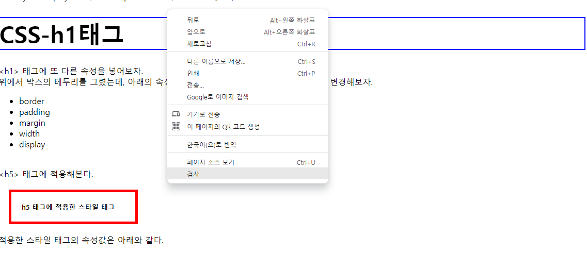
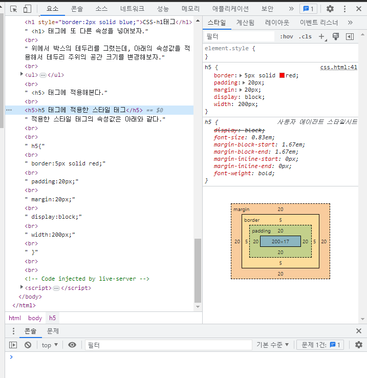

CSS
설명
종속형 시트 또는 캐스케이딩 스타일 시트는
마크업 언어가
실제 표시되는 방법을 기술하는 스타일 언어로,
HTML과 XHTML에 주로 쓰이며, XML에서도 사용할 수 있다.
W3C의 표준이고, 레이아웃과 스타일을 정의할 때의 자유도가 높다.
기본 파일명은 style.css이다.
웹페이지에 CSS를 삽입하는 2가지 방법
- 스타일 태그 <head> 태그 내에 <style> </style> 태그를 삽입하여 <style> 태그 내에 선택자와 속성을 선언해 사용.
- 스타일 속성 본문 내용에 <a> 태그를 사용하여 효과를 준다.
- 추가설명 그리고 본문의 스타일 속성과 스타일 태그에 있는 속성이 중복일 경우 스타일 속성을 우선시 한다.
<style> 태그 내에 "a {}" 와 같은 선택자와 선택자 내에 color:red; 와 같은 속성값을 넣어준다.
이런 식으로 써준다.
<style>
a {
color:black;
text-decoration: none;
}
</style>
스타일 태그를 이렇게 작성해두면 <body> 태그 내에서 <a> 태그를 사용한 텍스트는 모두 해당 속성이 적용된다.
아래와 같이 특정 글자를 빨간색으로 표시를 한다면,
css 문법 연습
이렇게 쓴다.
css <a style="color:red;">문법</a> 연습
여기다 밑줄을 긋고 싶다?
스타일 속성 내에 이것을 추가하자 (text-decoration: underline;)
css <a style="color:red;text-decoration: underline;">문법</a> 연습
아래처럼 문법이라는 글씨가 빨간색에, 밑줄까지 그어진 것을 볼 수 있다.
css 문법 연습
스타일 태그에서 텍스트의 색상을 검정으로 해놓아도, 스타일 속성에서 빨강으로 적용하면 해당 텍스트는 빨강으로 표시된다.
현재 페이지는 스타일 태그를 통해 텍스트가 검정으로 설정되어 모든 글자가 검정으로 보이게 되어있다.
하지만 위에서 확인할 수 있듯이 스타일 속성을 적용한 텍스트는 빨강으로 보이는 것을 확인할 수 있다.
CSS box model 소개 (생활코딩 링크)
태그별 박스 모델
아래와 같이 <head> 태그에 넣어서 쓰거나,<style>
h1 {
border-width:5px;
border-color:red;
border-style:solid;
}
</style>
CSS-h1태그
아래처럼 텍스트에 스타일 속성을 넣어서 쓰거나 할 수 있다.<a style="border-width: 5px;border-color: red;border-style: solid;">CSS-일반텍스트</a>
CSS-일반텍스트
여기서 알 수 있는 것은,
<h1> 태그는 페이지의 가로너비 전체를 쓴다는 것과, <a> 태그는 적용되는 텍스트만큼만의 박스 공간을 쓴다는 것
또한 display:inline 또는 display:block 이라는 속성으로 가로너비의 크기를 변경할 수 있다.
이렇게 써보자.
<a style="border-width: 5px;border-color: red;border-style: solid; display:block;">CSS-일반텍스트</a>
CSS-일반텍스트
이렇게도 써보자.
<h1 style="display:inline;border-width:2px;">CSS-h1태그</h1>
CSS-h1태그
<h1> 태그처럼 페이지의 가로너비 전체를 쓰는 태그를 Block level element(==tag)
<a> 태그처럼 적용되는 컨텐츠의 부피만큼만 쓰는 태그를 Inline element(==tag) 라고 한다.
아래의 스타일 코드를 줄여보자.
<style>
h1 {
border-width:5px;
border-color:red;
border-style:solid;
}
</style>
위 코드를 이렇게 줄일 수 있다.
<style>
h1 {
border:5px red solid;
}
</style>
순서에 상관없이 border 속성의 값을 넣어주면 적용된다.
이렇게 넣어봤다.
<h1 style="display:inline;border:2px solid blue;">CSS-h1태그</h1>
CSS-h1태그
<h1> 태그에 또 다른 속성을 넣어보자.위에서 박스의 테두리를 그렸는데, 아래의 속성값을 적용해서 테두리 주위의 공간 크기를 변경해보자.
- border
- padding
- margin
- width
- display
<h5> 태그에 적용해본다.
h5 태그에 적용한 스타일 태그
적용한 스타일 태그의 속성값은 아래와 같다.h5{
border:5px solid red;
padding:20px;
margin:20px;
display:block;
width:200px;
}
이 상태에서 브라우저에서 마우스 우클릭 후 '검사'라는 항목을 클릭하거나 'F12' 키를 눌러보자.

아래와 같은 창이 활성화되는데, 요소 탭에서 <h5> 태그가 있는 부분을 클릭해보자.
오른쪽에 해당 태그의 스타일 속성값이 어떻게 적용되어 있는지 항목별 값을 볼 수 있다.

~2023.04.05 작성
2023.04.06 시작
그리드 (링크)
디자인이라는 목적을 위해서 어떠한 의미도 가지지 않는 태그가 필요할 때가 있다.그럴 때 사용하는 것이 <div> 라는 태그이다.
또한 비슷한 태그로는 <span> 이라는 것이 있다.
둘의 차이는 <div> 태그는 block level element, <span> 태그는 inline element 의 속성을 가진다는 점이다.
block level element가 필요하냐, inline element가 필요하냐에 따라 목적에 맞게 사용하자.
<div> 태그를 사용해본다.
우선 그리드를 사용하기 위해서는 <div> 의 부피감을 확인할 필요가 있다.
<head> 태그에 <style> 태그로 border 속성을 추가해보자.
코드는 아래와 같다.
<style>
div{
border:5px solid grey;
}
</style>
<body>
<div>NAVIGATION</div>
<div>ARTICLE</div>
</body>
아래와 같이 박스가 그려진 텍스트 2개를 볼 수 있다.
NAVIGATION
ARTICLE
이제 그리드를 사용해서 변화를 줄 차례이다.
아래와 같이 <body> 태그 내 본문의 내용을 수정해보자.
본문 텍스트 2줄에 대한 부모 태그를 만들어주는 것이다.
<body>
<div id="grid">
<div>NAVIGATION</div>
<div>ARTICLE</div>
</div>
</body>
그리고 id="grid" 의 속성을 스타일 태그에 추가하자.
<style>
div{
border:5px solid grey;
}
#grid{
border:5px solid pink;
}
</style>
새로 만든 <div> 태그 아래에 있는 태그들을 나란히 배치하고 싶다면, 이렇게 부모 태그를 만들어서 그 안에서 디자인을 적용해주는 것이다.
위 코드를 적용해보자.
NAVIGATION
ARTICLE
이렇게 묶인 그룹의 디자인을 변경하기 위해서는 id="grid" 의 속성값을 추가해주면 된다.
#grid 를 수정해보자.
<style>
div{
border:5px solid grey;
}
#grid{
border:5px solid pink;
display:grid;
grid-template-columns:150px 1fr;
}
</style>
NAVIGATION
ARTICLE
이 상태에서 브라우저의 크기를 조절해보면 ARTICLE 쪽의 박스 크기가 변경되는 것도 확인해보자.
grid-template-columns:150px 1fr; 에서
- grid-template-columns는 배치 형태를
- 150px 는 첫번째 요소의 가로 너비
- 1fr 은 두번째 요소의 가로 너비를 의미한다.
- 150px 는 크기를 150px 로 고정하며, 1fr 은 나머지 공간을 브라우저의 크기에 맞게 변경된다.
- 만약 1fr 2fr 이라고 입력했다면 브라우저의 가로너비를 3등분해서 첫번째 요소는 1/3의 공간을, 두번째 요소는 2/3의 공간을 배분해서 사용한다.
NAVIGATION
종속형 시트 또는 캐스케이딩 스타일 시트는 마크업 언어가
실제 표시되는 방법을 기술하는 스타일 언어로,
HTML과 XHTML에 주로 쓰이며, XML에서도 사용할 수 있다.
W3C의 표준이고, 레이아웃과 스타일을 정의할 때의 자유도가 높다.
기본 파일명은 style.css이다.
속성값과 본문을 변경해보면서 그리드라는 것에 익숙해지도록 하자.
이러한 스타일 속성들을 브라우저에서 지원하는지 확인할 수 있는 사이트가 있다.
caniuse.com
여기서 앞서 사용했던 태그와 속성을 검색해보면, 어떤 브라우저에서 실행이 가능한지, 얼마의 사람들이 이용할 수 있는지 등을 확인할 수 있다.
반응형 디자인
반응형 디자인 외 이후의의 것은 아래의 페이지에 기록한다.반응형 디자인